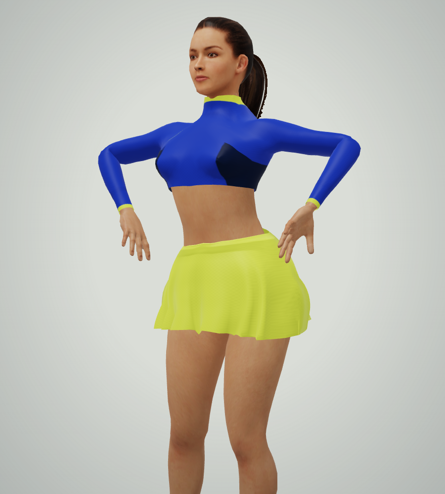
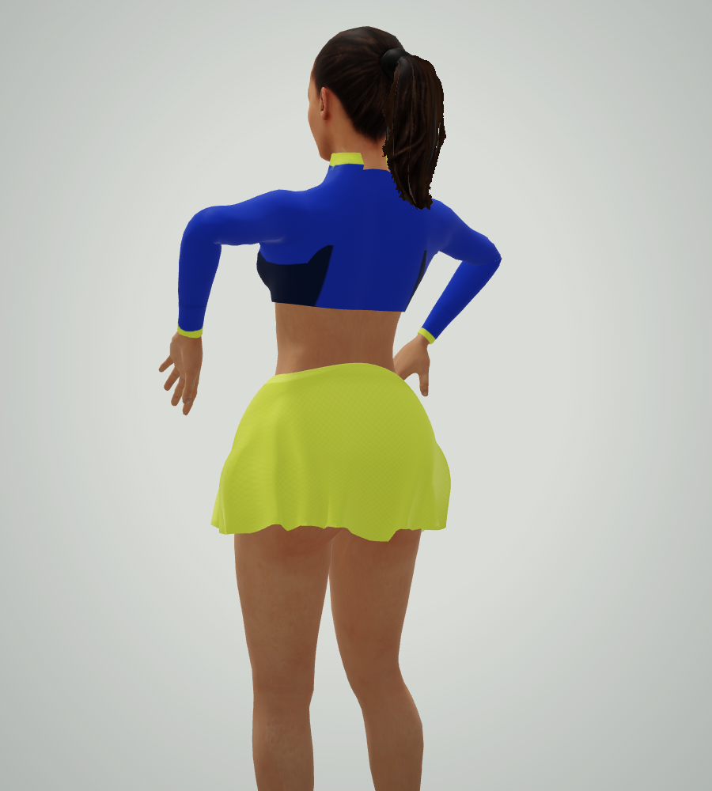
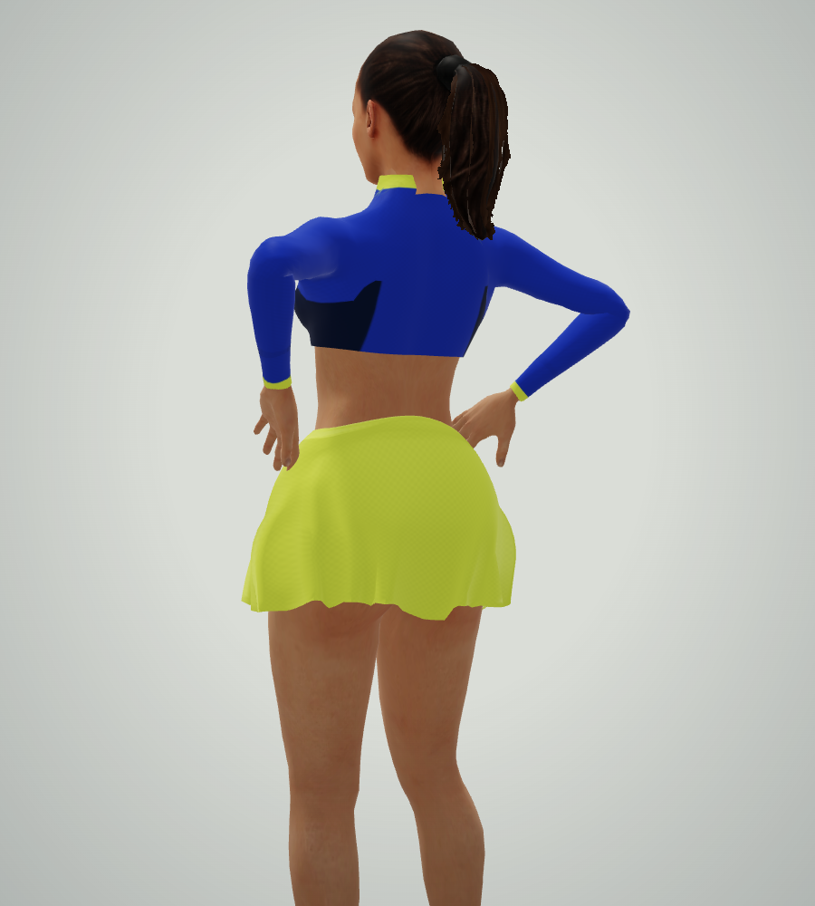

Hands on hips at rest
Matched native renders: same adult character, animation age, camera, lighting and approved walking build. Resting hand/fabric contact is permitted; walking clearance is retained.
Before · floating beside the hips
After · hands at the shifted waist


Walk and stop in the club
Both captures use the approved walking motion. Watch the final settling pose. Real-time frame phases differ.
Pose placement improved. Overall character fidelity remains below the requested flagship standard.